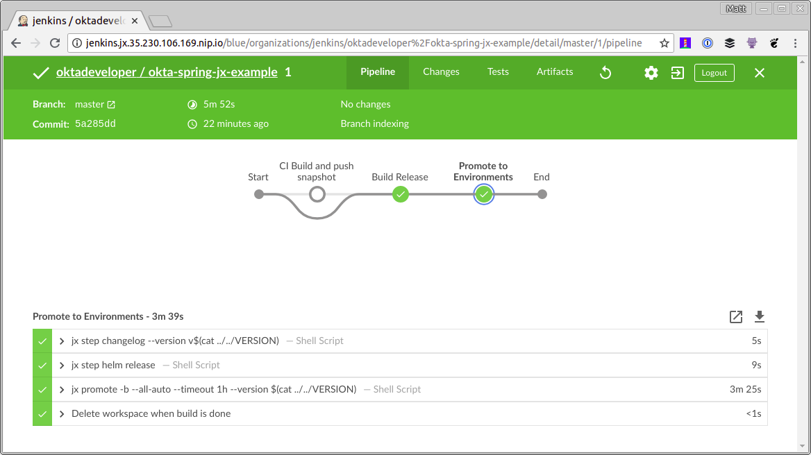
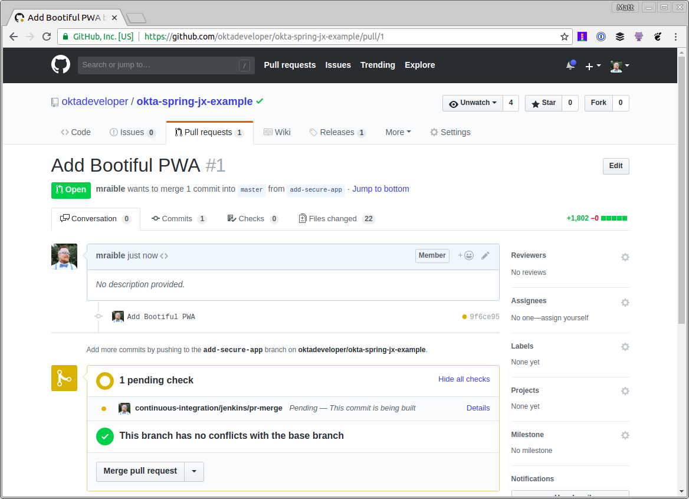
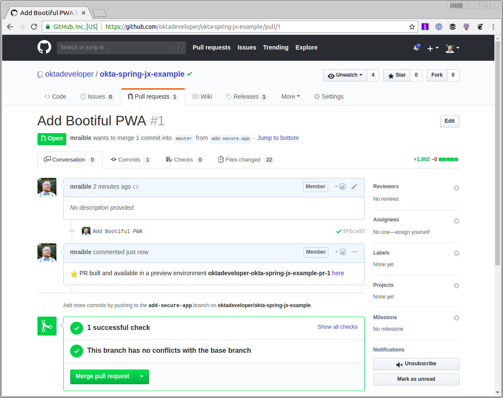
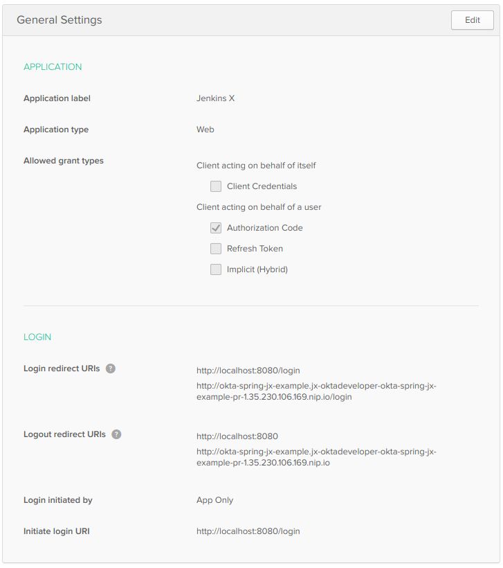
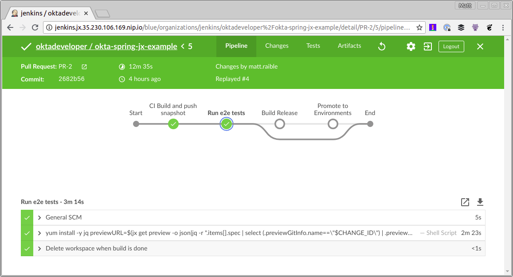

使用 Jenkins X、Kubernetes 和 Spring Boot 实现 CI/CD
过去五年中的变化，如迁移到公有云以及从虚拟机向容器的转变，已经彻底改变了构建和部署软件的意义。
以 Kubernetes 为例。Google 于2014年开源，现在所有主流的公有云供应商都支持它—它为开发人员提供了一种很好的方式，可以将应用程序打包到 Docker 容器中，并部署到任意 Kubernetes 集群中。
使用 CI/CD、Kubernetes 和 Jenkins X 进行高性能开发
在技术上，高性能团队几乎总是成功的必要条件，而持续集成、持续部署(CI/CD)、小迭代以及快速反馈是构建模块。为你的云原生应用程序设置 CI/CD 可能比较困难。通过自动化所有内容，开发人员可以花费宝贵的时间来交付实际的业务。
如何使用容器、持续交付和 Kubernetes 成为高效团队？这就是 Jenkins X 的切入点。
“Jenkins X 的理念是为所有开发人员提供他们自己的海军航海管家，可以帮助你航行持续交付的海洋。” - James Strachan
Jenkins X 帮助你自动化你在 Kubernetes 中的 CI/CD - 你甚至不需要学习 Docker 或 Kubernetes！
Jenkins X 能做什么？
Jenkins X 在 Kubernetes 上自动安装，配置和升级 Jenkins 和其他应用程序（Helm，Skaffold，Nexus 等）。它使用 Docker 镜像、Helm 图表和流水线来自动化应用程序的 CI/CD。它使用 GitOps 来管理环境之间的升级，并通过在拉取请求和生产时对其进行评论来提供大量反馈。
Jenkins X 入门
要安装 Jenkins X，首先需要在你的机器或云供应商上安装 jx 二进制文件。从 Google Cloud 可以获得300美元的积分，所以我决定从那里开始。
在 Google Cloud 上安装 Jenkins X 并创建群集
浏览到cloud.google.com并登录。如果你还没有帐户，请注册免费试用。转到控制台（右上角有一个链接）并激活 Google Cloud shell。将以下命令复制并粘贴到 shell 中。
curl -L https://github.com/jenkins-x/jx/releases/download/v1.3.79/jx-linux-amd64.tar.gz | tar xzv
sudo mv jx /usr/local/bin
注意：Google Cloud Shell 将在一小时后终止在你的主目录之外所做的任何更改，因此你可能必须重新运行这些命令。好消息是它们将在你的历史中，所以你只需要向上箭头并进入。你也可以删除上面的 sudo mv 命令，并将以下内容添加到 .bashrc 中。
export PATH=$PATH:.
使用以下命令在 GKE（Google Kubernetes Engine）上创建集群。你可能必须为你的帐户启用 GKE。
jx create cluster gke --skip-login
如果系统提示你下载 helm，请确认你要安装。系统将提示你选择 Google Cloud Zone。我建议选择一个靠近你的位置。我选择 us-west1-a，因为我住在 Denver, Colorado 附近。对于 Google Cloud Machine 类型，我选择了 n1-standard-2 并使用了 min（3）和 max（5）个节点数的默认值。
对于 GitHub 名称，键入你自己的（例如 mraible）和你在 GitHub 上注册的电子邮件（例如 matt.raible@okta.com）。我试图使用 oktadeveloper（一个 GitHub 组织），但我无法使其工作。
注意：如果你的帐户启用了两步认证，则 GitHub 集成将失败。如果你希望成功完成该过程，则需要在 GitHub 上禁用它。
当提示安装 ingress controller 时，按 Enter 键 确定。再次按 Enter 键选择默认 domain。
系统将提示你创建 GitHub API Token。单击 提供的 URL 并将其命名为 “Jenkins X”。将 token 值复制并粘贴回控制台。
在安装完成后喝杯咖啡、饮料或做一些俯卧撑。可能需要几分钟。
下一步是将 API token 从 Jenkins 复制到你的控制台。按照控制台中提供的说明进行操作。
完成后，运行 jx console 并单击链接以登录到 Jenkins 实例。单击 Administration 并升级 Jenkins 及其所有插件（插件管理器 > 滚动到底部并选择全部）。如果未能执行此步骤，将无法从 GitHub pull request 到 Jenkins X CI 进程。
创建一个 Spring Boot 应用程序
当我第一次开始使用 Jenkins X 时，我尝试导入现有项目。即使我的应用程序使用了 Spring Boot，但是根目录中没有 pom.xml，所以 Jenkins X 认为它是一个 Node.js 应用程序。出于这个原因，我建议首先创建一个空白的 Spring Boot 应用程序，以保证 Jenkins X 正确创建。
从 Cloud Shell 创建一个简单的 Spring Boot 应用程序：
jx create spring -d web -d actuator
此命令使用 Spring Initializr，因此系统会提示你进行一些选择。以下是我的选择：
| QUESTION | ANSWER |
|---|---|
| Language | java |
| Group | com.okta.developer |
| Artifact | okta-spring-jx-example |
提示：为你的 artifact name 选取一个简洁的名称将减轻你的痛苦。Jenkins X 对于版本名称有53个字符的限制，oktadeveloper/okta-spring-boot-jenkinsx-example 将会使它超过两个字符。
为 git 用户名、初始化 git 和提交消息都选择默认值。如果你不想使用个人帐户，可以选择要使用的组织。运行以下命令以查看应用程序的 CI/CD 流水线。
jx get activity -f okta-spring-jx-example -w
运行 jx console，单击生成的链接，然后导航到你的项目(如果你想要一个更富视觉效果的视图)。

此过程将执行一些任务：
- 为你的项目创建一个版本。
- 为演示环境项目创建 pull request。
- 将其自动部署到演示环境，以便你可以查看它的运行情况。
Merge status checks all passed so the promotion worked! Application is available at: http://okta-spring-jx-example.jx-staging.35.230.106.169.nip.io
注意：由于 Spring Boot 默认情况下不提供欢迎页面，所以打开上面的 URL 时将返回404。
使用 Jenkins X 将 Spring Boot 应用程序部署到生产环境中
默认情况下，Jenkins X 只会自动部署到演示环境。你可以手动改进从演示到生产使用：
jx promote okta-spring-jx-example --version 0.0.1 --env production
你可以使用 jx edit environment 更改生产环境，以使用自动部署。
既然你已经知道如何使用 Jenkins X 和一个简单的 Spring Boot 应用程序，让我们来看看如何通过一个更实际的示例使其工作。
保护你的 Spring Boot 应用程序并添加 Angular PWA
在过去的几个月里，我写了一系列有关使用 Ionic/Angular 和 Spring Boot 构建 PWA（渐进式 Web 应用程序）的博文。
- 使用 Okta 保护你的加密货币财富跟踪 PWA
- 使用 Okta（而不是本地存储）安全地存储用户的数据
- 使用 WireMock、Jest、Protractor 和 Travis CI 测试 Spring Boot API 和 Angular 组件的 Hitchhiker 指南
- 将你的 Spring Boot + Angular PWA 部署为一个 Artifact 这是该系列的最后一篇博客文章。我相信这是一个真实应用程序的很好的例子，因为它有许多单元和集成测试，包括与 Protractor 的端到端测试。让我们看看如何使用 Jenkins X 和 Kubernetes 自动化生产路径！
克隆刚刚从GitHub创建的Spring Boot项目（确保在URL中更改{yourUsername}）：
git clone https://github.com/{yourUsername}/okta-spring-jx-example.git okta-jenkinsx
在邻近目录中，将创建的具有 Spring Boot + Angular 的项目克隆为一个 artifact：
git clone https://github.com/oktadeveloper/okta-spring-boot-angular-auth-code-flow-example.git spring-boot-angular
在终端中，导航到 okta-jenkinsx 并删除不再需要的文件：
cd okta-jenkinsx
rm -rf .mvn src mvnw* pom.xml
结果应该是包含以下文件的目录结构：
$ tree .
.
├── charts
│ ├── okta-spring-jx-example
│ │ ├── Chart.yaml
│ │ ├── Makefile
│ │ ├── README.md
│ │ ├── templates
│ │ │ ├── deployment.yaml
│ │ │ ├── _helpers.tpl
│ │ │ ├── NOTES.txt
│ │ │ └── service.yaml
│ │ └── values.yaml
│ └── preview
│ ├── Chart.yaml
│ ├── Makefile
│ ├── requirements.yaml
│ └── values.yaml
├── Dockerfile
├── Jenkinsfile
└── skaffold.yaml
4 directories, 15 files
将 spring-boot-angular 所有文件复制到 okta-jenkinsx。
cp -r ../spring-boot-angular/* .
使用 Travis CI 测试此应用程序时，我运行了 npm install 作为该过程的一部分。使用 Jenkins X，使用一个容器（例如 maven 或者 nodejs）保存所有内容更简单，因此在 frontend-maven-plugin（在 holdings-api/pom.xml）中添加执行以运行 npm install （提示：你将需要执行 id==’npm install' 添加到现有的pom.xml中）。
现在是 okta-jenkinsx 在 IntelliJ IDEA、Eclipse、Netbeans 或 VS Code 等 IDE 中作为项目打开目录的好时机！
<plugin>
<groupId>com.github.eirslett</groupId>
<artifactId>frontend-maven-plugin</artifactId>
<version>${frontend-maven-plugin.version}</version>
<configuration>
<workingDirectory>../crypto-pwa</workingDirectory>
</configuration>
<executions>
<execution>
<id>install node and npm</id>
<goals>
<goal>install-node-and-npm</goal>
</goals>
<configuration>
<nodeVersion>${node.version}</nodeVersion>
</configuration>
</execution>
<execution>
<id>npm install</id>
<goals>
<goal>npm</goal>
</goals>
<phase>generate-resources</phase>
<configuration>
<arguments>install --unsafe-perm</arguments>
</configuration>
</execution>
...
</executions>
</plugin>
注意：--unsafe-perm 标志是必要的，因为 Jenkins X 以 root 用户身份运行构建。我从 node-sass 的故障排除说明中找到了这个解决方案。
增加 Actuator 并关闭 HTTPS
Jenkins X 依靠 Spring Boot 的 Actuator 进行健康检查。这意味着如果你不将其包含在你的项目中（或有 /actuator/health 防护），Jenkins X 会报告你的应用程序启动失败。
将 Actuator starter 作为依赖项添加到 holdings-api/pom.xml 中：
<dependency>
<groupId>org.springframework.boot</groupId>
<artifactId>spring-boot-starter-actuator</artifactId>
</dependency>
你还需要允许访问其运行健康检查。Jenkins X 将部署你的应用程序在一个 NGINX 服务器中,因此你也需要强制关闭 HTTPS，否则你将无法访问你的应用程序。修改 holdings-api/src/main/java/.../SecurityConfiguration.java 以允许 holdings-api/src/main/java/.../SecurityConfiguration.java 和删除 requiresSecure()。
public class SecurityConfiguration extends WebSecurityConfigurerAdapter {
@Override
public void configure(WebSecurity web) throws Exception {
web.ignoring().antMatchers("/**/*.{js,html,css}");
}
@Override
protected void configure(HttpSecurity http) throws Exception {
http
.csrf().csrfTokenRepository(CookieCsrfTokenRepository.withHttpOnlyFalse())
.and()
.authorizeRequests()
.antMatchers("/", "/home", "/api/user", "/actuator/health").permitAll()
.anyRequest().authenticated();
}
}
调整 Dockerfile 和 Jenkinsfile 中的路径
由于此项目构建在子目录而不是根目录中，因此请更新 ./Dockerfile 以查找 holdings-api 文件。
FROM openjdk:8-jdk-slim
ENV PORT 8080
ENV CLASSPATH /opt/lib
EXPOSE 8080
# copy pom.xml and wildcards to avoid this command failing if there's no target/lib directory
COPY holdings-api/pom.xml holdings-api/target/lib* /opt/lib/
# NOTE we assume there's only 1 jar in the target dir
# but at least this means we don't have to guess the name
# we could do with a better way to know the name - or to always create an app.jar or something
COPY holdings-api/target/*.jar /opt/app.jar
WORKDIR /opt
CMD ["java", "-jar", "app.jar"]
你还需要更新 Jenkinsfile,以便它可以运行 holdings-api 目录中的任何 mvn 命令。也添加 -Pprod 配置文件。例如：
// in the 'CI Build and push snapshot' stage
steps {
container('maven') {
dir ('./holdings-api') {
sh "mvn versions:set -DnewVersion=$PREVIEW_VERSION"
sh "mvn install -Pprod"
}
}
...
}
// in the 'Build Release' stage
dir ('./holdings-api') {
sh "mvn versions:set -DnewVersion=\$(cat ../VERSION)"
}
...
dir ('./holdings-api') {
sh "mvn clean deploy -Pprod"
}
这应该足以让这个应用程序与 Jenkins X 一起使用。但是，除非你有一个 Okta 帐户并相应地配置它，否则你将无法登录它。
为什么使用Okta？
简而言之，我们使标识管理比你可能习惯的更简洁、更安全、更具可扩展性。Okta 是一种云服务，允许开发人员创建、编辑和安全存储用户帐户和用户帐户数据，并将其与一个或多个应用程序相连接。我们的 API 使你能够：
- 对用户进行身份验证和授权
- 存储关于用户的数据
- 执行基于密码和社交登录
- 使用多重身份验证保护应用程序
- 了解更多！查看我们的产品文档 你心动了吗？注册一个永远免费的开发者帐户，当你完成后，请返回，以便我们可以通过 Spring Boot 和 Jenkins X 了解有关 CI/CD 的更多信息！
在 Okta 中为 Spring Boot 应用程序创建一个 Web 应用程序
完成设置过程后，登录到你的帐户并导航到 Applications > Add Application。单击 Web 和 下一步。在下一页中，输入以下值并单击 Done (必须单击 Done，然后编辑以修改注销重定向 URI)。
- 应用名称：
Jenkins X - 默认 URI：
http://localhost:8080 - 登录重定向 URI：
http://localhost:8080/login - 注销重定向 URI：
http://localhost:8080打开holdings-api/src/main/resources/application.yml并将你 org/app 中的值粘贴到其中。okta: client: orgUrl: https://okta.okta.com token: XXX security: oauth2: client: access-token-uri: https://okta.okta.com/oauth2/default/v1/token user-authorization-uri: https://okta.okta.com/oauth2/default/v1/authorize client-id: {clientId} client-secret: {clientSecret} resource: user-info-uri: https://okta.okta.com/oauth2/default/v1/userinfo
你将注意到 token 值是 xxx。这是因为我更喜欢从环境变量中读取它，而不是签入源代码控制。你可能也想为你的客户密钥执行此操作，但我只是为了简洁而做一个属性。要创建 API token：
- 导航到 API > Tokens ，然后单击 Create Token
- 为令牌命名（例如 “Jenkins X”），然后将其值设置为
OKTA_CLIENT_TOKEN环境变量。 你需要在组织的用户配置文件中添加一个holdings属性，以便将你的加密货币存储在 Okta 中。导航到 Users > Profile Editor。点击 Profile 表格中的第一个配置文件。你可以通过其 Okta 标识来识别它。单击 Add Attribute 并使用以下值：
- 显示名称：
Holdings - 变量名：
holdings - 描述：
Cryptocurrency Holdings执行这些步骤后，你应该能够导航到http://localhost:8080, 并在运行以下命令后登录：cd holdings-api ./mvnw -Pprod package java -jar target/*.jar
在 Jenkins X 中存储 Secrets 在本地存储环境变量非常简单。但是你如何在 Jenkins X 中做到这一点？看看它的凭证功能就知道了。下面是使用方法:
- 在 Google Cloud Shell 上运行
jx console，以获取 Jenkins X 网址 - 单击该链接，登录，然后单击顶部的 Administration
- 单击 Credentials > (global) > Add Credentials（在左侧）
- 从下拉列表中选择 Secret text，并为 ID 输入 OKTA_CLIENT_TOKEN
- 将 Okta API token 复制/粘贴到 Secret 字段中
当你在里面，添加 secrets：
OKTA_APP_ID、E2E_USERNAME和E2E_PASSWORD。第一个是你创建的Jenkins XOIDC 应用程序的 ID。您可以通过在 Okta 上导航到您的应用程序并从 URL 复制值来获得它的值。该E2E-*密钥应该是要用来运行终端到终端（Protractor）测试的凭证。你可能想为此创建一个新用户。
你可以通过将这些值添加到 environment 顶部附近的部分来访问 Jenkinsfile 中的这些值 。
environment {
ORG = 'mraible'
APP_NAME = 'okta-spring-jx-example'
CHARTMUSEUM_CREDS = credentials('jenkins-x-chartmuseum')
OKTA_CLIENT_TOKEN = credentials('OKTA_CLIENT_TOKEN')
OKTA_APP_ID = credentials('OKTA_APP_ID')
E2E_USERNAME = credentials('E2E_USERNAME')
E2E_PASSWORD = credentials('E2E_PASSWORD')
}
将环境变量转移到 Docker 容器
要将 OKTA_CLIENT_TOKEN 环境变量转移到 Docker 容器，请查看：
sh "make preview"
并将其更改为：
sh "make OKTA_CLIENT_TOKEN=\$OKTA_CLIENT_TOKEN preview"
此时，你可以创建分支，提交更改，并验证 Jenkins X 中的所有内容是否正常工作。
cd ..
git checkout -b add-secure-app
git add .
git commit -m "Add Bootiful PWA"
git push origin add-secure-app
打开浏览器并导航到 GitHub 上的存储库并创建 pull request。创建后它应该如下所示。

如果你的 pull request 测试通过，你应该能看到一些绿色标记和 Jenkins X 的评论，说明你的应用程序在预览环境中可用。

如果你单击此处链接并尝试登录，则可能会从 Okta 得到一个错误，指出重定向 URI 尚未列入白名单。
在 Okta 中自动添加重定向 URI
当你在 Okta 中创建应用程序并在本地运行它们时，很容易知道应用程序的重定向 URI 将是什么。对于这个特定的应用程序，它们将 http://localhost:8080/login 用于登录，http://localhost:8080 用于注销。当您进入生产环境时，URL通常也是众所周知的。但是，使用 Jenkins X，URL 是动态的，并根据你的 pull request 编号动态创建的。
要使用 Okta 进行此操作，你可以创建一个 Java 类，该类与 Okta API 进行交互。创建 holdings-api/src/test/java/.../cli/AppRedirectUriManager.java 并使用以下代码完善它。
package com.okta.developer.cli;
import com.okta.sdk.client.Client;
import com.okta.sdk.lang.Collections;
import com.okta.sdk.resource.application.OpenIdConnectApplication;
import org.slf4j.Logger;
import org.slf4j.LoggerFactory;
import org.springframework.beans.factory.annotation.Value;
import org.springframework.boot.ApplicationArguments;
import org.springframework.boot.ApplicationRunner;
import org.springframework.boot.SpringApplication;
import org.springframework.boot.autoconfigure.SpringBootApplication;
import java.util.LinkedHashSet;
import java.util.List;
import java.util.Set;
@SpringBootApplication
public class AppRedirectUriManager implements ApplicationRunner {
private static final Logger log = LoggerFactory.getLogger(AppRedirectUriManager.class);
private final Client client;
@Value("${appId}")
private String appId;
@Value("${redirectUri}")
private String redirectUri;
@Value("${operation:add}")
private String operation;
public AppRedirectUriManager(Client client) {
this.client = client;
}
public static void main(String[] args) {
SpringApplication.run(AppRedirectUriManager.class, args);
}
@Override
public void run(ApplicationArguments args) {
log.info("Adjusting Okta settings: {appId: {}, redirectUri: {}, operation: {}}", appId, redirectUri, operation);
OpenIdConnectApplication app = (OpenIdConnectApplication) client.getApplication(appId);
String loginRedirectUri = redirectUri + "/login";
// update redirect URIs
List<String> redirectUris = app.getSettings().getOAuthClient().getRedirectUris();
// use a set so values are unique
Set<String> updatedRedirectUris = new LinkedHashSet<>(redirectUris);
if (operation.equalsIgnoreCase("add")) {
updatedRedirectUris.add(loginRedirectUri);
} else if (operation.equalsIgnoreCase("remove")) {
updatedRedirectUris.remove(loginRedirectUri);
}
// todo: update logout redirect URIs with redirectUri (not currently available in Java SDK)
app.getSettings().getOAuthClient().setRedirectUris(Collections.toList(updatedRedirectUris));
app.update();
System.exit(0);
}
}
该类使用 Spring Boot 的 CLI（命令行接口）支持，这使得可以使用 Exec Maven 插件调用它。要添加对 Maven 运行它的支持，请在 holdings-api/pom.xml 进行以下修改 。
<properties>
...
<exec-maven-plugin.version>1.6.0</exec-maven-plugin.version>
<appId>default</appId>
<redirectUri>override-me</redirectUri>
</properties>
<!-- dependencies -->
<build>
<defaultGoal>spring-boot:run</defaultGoal>
<finalName>holdings-app-${project.version}</finalName>
<plugins>
<!-- existing plugins -->
<plugin>
<groupId>org.codehaus.mojo</groupId>
<artifactId>exec-maven-plugin</artifactId>
<version>${exec-maven-plugin.version}</version>
<executions>
<execution>
<id>add-redirect</id>
<goals>
<goal>java</goal>
</goals>
</execution>
</executions>
<configuration>
<mainClass>com.okta.developer.cli.AppRedirectUriManager</mainClass>
<classpathScope>test</classpathScope>
<arguments>
<argument>appId ${appId} redirectUri ${redirectUri}</argument>
</arguments>
</configuration>
</plugin>
</plugins>
</build>
然后更新 Jenkinsfile 以在构建镜像之后添加一段 mvn exec:java 供运行。
dir ('./charts/preview') {
container('maven') {
sh "make preview"
sh "make OKTA_CLIENT_TOKEN=\$OKTA_CLIENT_TOKEN preview"
sh "jx preview --app $APP_NAME --dir ../.."
}
}
// Add redirect URI in Okta
dir ('./holdings-api') {
container('maven') {
sh '''
yum install -y jq
previewURL=$(jx get preview -o json|jq -r ".items[].spec | select (.previewGitInfo.name==\\"$CHANGE_ID\\") | .previewGitInfo.applicationURL")
mvn exec:java@add-redirect -DappId=$OKTA_APP_ID -DredirectUri=$previewURL
'''
}
}
提交并推送你的更改，应用程序应该更新为 http://{yourPreviewURL}/login 的重定向 URI。你需要手动为 http://{yourPreviewURL} 添加一个注销重定向 URI， 因为 Okta 的 Java SDK 目前不支持此功能。

要将你的 pull request 上传到演示环境，请将其合并，并将主分支推送到演示环境。不幸的是，你将无法登录。这是因为没有进程使用你的 Okta 应用程序注册登台站点的重定向 URI。如果手动添加 URI，一切都应该有效。
在 Jenkins X 中运行 Protractor 测试
对我来说，弄清楚如何在 Jenkins X 中运行端到端测试是最难的。我首先添加了一个新的 Maven 配置文件，它允许我使用 Maven 而不是 npm 运行测试。
注意：要使此配置文件起作用，你需要将 http://localhost:8000/login 登录重定向 URI 添加到你的应用程序，并将 http://localhost:8000 作为注销重定向URI。
<profile>
<id>e2e</id>
<properties>
<!-- Hard-code port instead of using build-helper-maven-plugin. -->
<!-- This way, you don't need to add a redirectUri to Okta app. -->
<http.port>8000</http.port>
</properties>
<build>
<plugins>
<plugin>
<groupId>org.springframework.boot</groupId>
<artifactId>spring-boot-maven-plugin</artifactId>
<executions>
<execution>
<id>pre-integration-test</id>
<goals>
<goal>start</goal>
</goals>
<configuration>
<arguments>
<argument>--server.port=${http.port}</argument>
</arguments>
</configuration>
</execution>
<execution>
<id>post-integration-test</id>
<goals>
<goal>stop</goal>
</goals>
</execution>
</executions>
</plugin>
<plugin>
<groupId>com.github.eirslett</groupId>
<artifactId>frontend-maven-plugin</artifactId>
<version>${frontend-maven-plugin.version}</version>
<configuration>
<workingDirectory>../crypto-pwa</workingDirectory>
</configuration>
<executions>
<execution>
<id>webdriver update</id>
<goals>
<goal>npm</goal>
</goals>
<phase>pre-integration-test</phase>
<configuration>
<arguments>run e2e-update</arguments>
</configuration>
</execution>
<execution>
<id>ionic e2e</id>
<goals>
<goal>npm</goal>
</goals>
<phase>integration-test</phase>
<configuration>
<environmentVariables>
<PORT>${http.port}</PORT>
<CI>true</CI>
</environmentVariables>
<arguments>run e2e-test</arguments>
</configuration>
</execution>
</executions>
</plugin>
</plugins>
</build>
</profile>
提示：你可能会注意到，我必须为 e2e-update 和 e2e-test 分两次不同的执行。我发现运行 npm e2e 与 frontend-maven-plugin 不兼容，因为它只调用其他 npm run 命令。看来你需要在使用 frontend-maven-plugin 时直接调用二进制文件。
这里使用的不是 TRAVIS 环境变量，而是 CI 变量。此更改需要更新 crypto-pwa/test/protractor.conf.js 来匹配。
baseUrl: (process.env.CI) ? 'http://localhost:' + process.env.PORT : 'http://localhost:8100',
进行这些更改，你应该能够运行 ./mvnw verify -Pprod,e2e 以在本地运行端到端测试。请注意，你需要将 E2E_USERNAME 和 E2E_PASSWORD 定义为环境变量。
当我第一次在 Jenkins X 中尝试这个功能时，我发现 jenkins-maven 代理没有安装 Chrome。我发现很难安装并发现 jenkins-nodejs 预安装了 Chrome 和 Xvfb。当我第一次尝试它时，我遇到以下错误：
[21:51:08] E/launcher - unknown error: DevToolsActivePort file doesn't exist
此错误是由 Chrome on Linux 问题引起的 。我发现解决办法是在 Protractor 的 chromeOptions 中指定 -disable-dev-shm-usage。我还添加了一些推荐的额外标志。我特别喜欢 --headless，在本地运行时，因此浏览器不会弹出并妨碍我。如果我想实时看到这个过程，我可以快速删除该选项。
如果你希望在 Jenkins X 上看到项目的 Protractor 测试运行，则需要修改 crypto-pwa/test/protractor.conf.js 以指定以下内容 chromeOptions：
capabilities: {
'browserName': 'chrome',
'chromeOptions': {
'args': ['--headless', ''--disable-gpu', '--no-sandbox', '--disable-extensions', '--disable-dev-shm-usage']
}
},
然后向 Jenkinsfile 添加一个新的 Run e2e tests 阶段，该阶段位于 “CI 构建”和“构建发布”阶段之间。如果有帮助，你可以看到最终的 Jenkins 文件。
stage('Run e2e tests') {
agent {
label "jenkins-nodejs"
}
steps {
container('nodejs') {
sh '''
yum install -y jq
previewURL=$(jx get preview -o json|jq -r ".items[].spec | select (.previewGitInfo.name==\\"$CHANGE_ID\\") | .previewGitInfo.applicationURL")
cd crypto-pwa && npm install --unsafe-perm && npm run e2e-update
Xvfb :99 &
sleep 60s
DISPLAY=:99 npm run e2e-test -- --baseUrl=$previewURL
'''
}
}
}
完成所有这些更改后，创建一个新分支，签入你的更改，并在 GitHub 上创建一个 pull request。
git checkout -b enable-e2e-tests
git add .
git commit -m "Add stage for end-to-end tests"
git push origin enable-e2e-tests
我确实需要做一些额外的调整才能通过所有的 Protractor 测试：
- 在
crypto-pwa/e2e/spec/login.e2e-spec.ts中，我无法通过should show a login button测试，所以我忽略了它，将 it(…) 改为 xit(…)。 - 在同一个文件中，我将2000 ms 超时更改为5000 ms，将5000 ms 超时更改为30000 ms。
- 在
crypto-pwa/test/protractor.conf.js中，我将 defaultTimeoutInterval 更改为 600000。 第一次运行时测试可能会失败，因为未为新预览环境配置注销重定向URI。更新 Okta 应用程序的注销重定向 URI 以匹配你的 PR 的预览环境 URI，重新 pull request 测试，一切都应该通过！

你可以在 GitHub 上的此示例中找到已完成应用程序的源代码 。
了解有关 Jenkins X、Kubernetes 和 Spring Boot 的更多信息
要了解有关 Spring Boot、Jenkins X 和 Kubernetes 的更多信息，请查看以下资源：
- Deploy Your Secure Spring Boot + Angular PWA as a Single Artifact
- Build a Basic CRUD App with Angular 5.0 and Spring Boot 2.0
- Introducing Jenkins X: a CI/CD solution for modern cloud applications on Kubernetes
- Kubernetes The Hard Way by Kelsey Hightower 如果你在 Kubernetes 上运行生产应用程序，我建议你研究 Jenkins X.它提供了一种在相同环境中进行 CI/CD 的方法，快速迭代并为你的客户更快地交付业务价值。
Jenkins X 还包括一个 DevPods 功能，可以在笔记本电脑上进行开发时，可以自动部署保存。我不确定 DevPods 是否适用于需要具有生产转换步骤的 JavaScript 应用程序。我宁愿让 webpack 和 Browsersync 在几秒钟内刷新我的本地浏览器，而不是等待几分钟创建并部署 Docker 镜像到 Kubernetes。
要获得 Jenkins X 的精彩概述和演示，请观看 James Strachan 在2018年6月的 Virtual JUG 会议上为 Kubernetes 发布的 Jenkins X: Continuous Delivery。
如果你有任何疑问，请在下面添加评论，在 Twitter 上发帖，或在我们的开发者论坛 上发帖提问。要获得有关未来博客文章和开发人员智慧的通知，你可以在Twitter上关注我的整个团队。
使用 Jenkins X 和 Kubernetes 将 CI/CD 添加到 Spring Boot 应用程序中，最初于2018年7月11日发布到 Okta 开发人员博客。